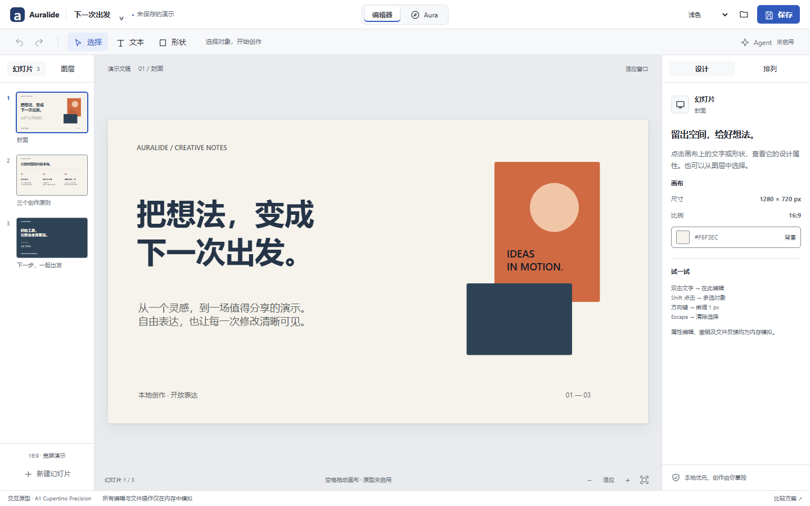
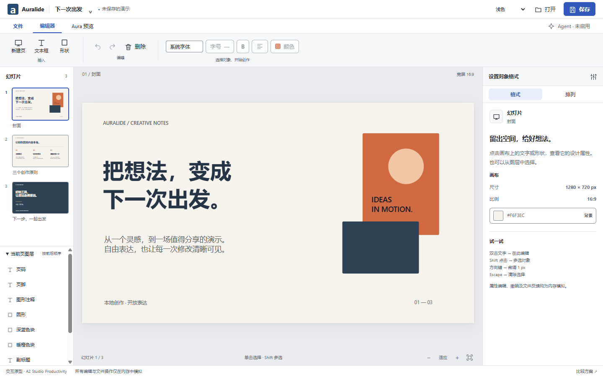
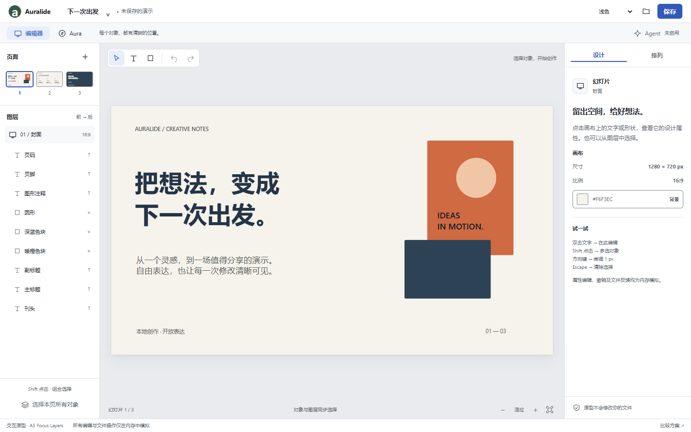

A1
安静 · 精密 · 画布主导
Cupertino Precision

更轻的工具栏，更大的创作空间。图层与幻灯片分页呈现，精简 Inspector 保持稳定。
打开 A1 原型 ↗画布优先，固定面板
负责人已选定 A2 · Studio Productivity。
A1 与 A3 保留为可操作的设计对照。
安静 · 精密 · 画布主导

更轻的工具栏，更大的创作空间。图层与幻灯片分页呈现，精简 Inspector 保持稳定。
打开 A1 原型 ↗专业 · 可发现 · 高效率

常用动作直接可见。上下文工具组连接选择与格式，降低中文办公用户的学习成本。
打开 A2 原型 ↗直观 · 图层清晰 · 创作自由

让对象结构始终可见。紧凑页面概览和独立画布工具组，服务于频繁的对象选择与调整。
打开 A3 原型 ↗切换幻灯片 → 选择文字 → 修改并应用 → 选择形状 → 在「排列」调整尺寸 → 模拟保存 → 再编辑并模拟重开 → 切换 Aura → 返回编辑器。
再用 Shift 多选、方向键、Tab 和明暗主题检查你日常使用的方式。
编辑、撤销、保存与打开仅在本页内存中模拟，刷新即丢失。没有 Agent 服务、真实文件读写、联网研究或发布能力。Aura 使用受限 iframe 模拟，正式应用安全架构不受修改。